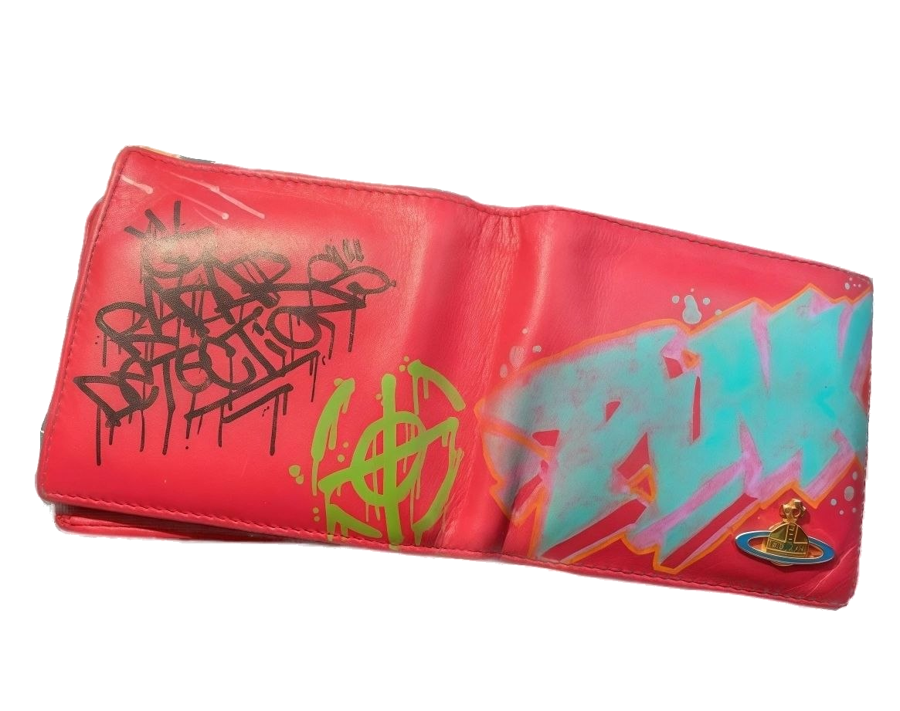
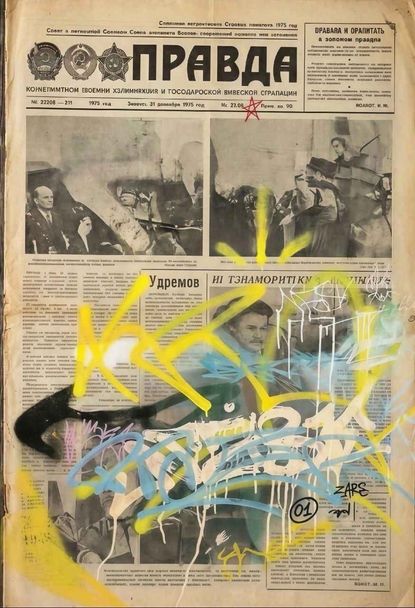
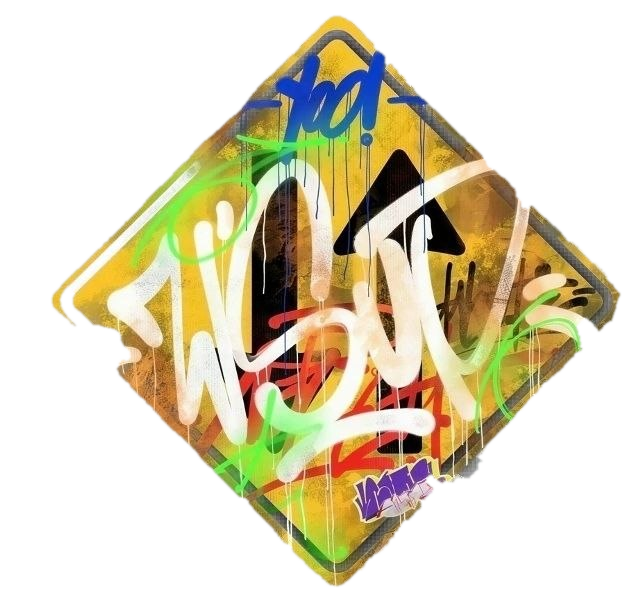
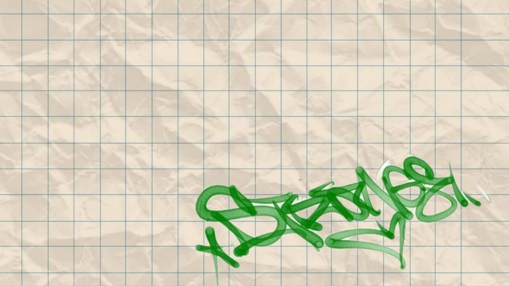
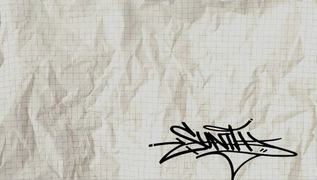
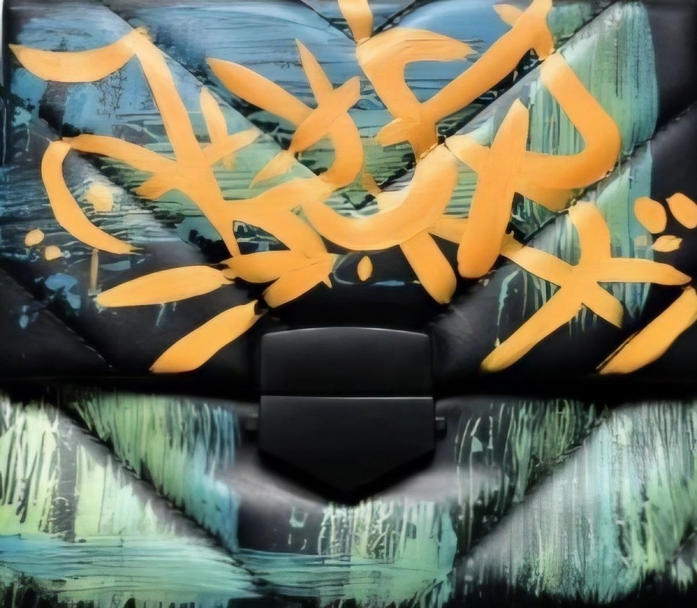
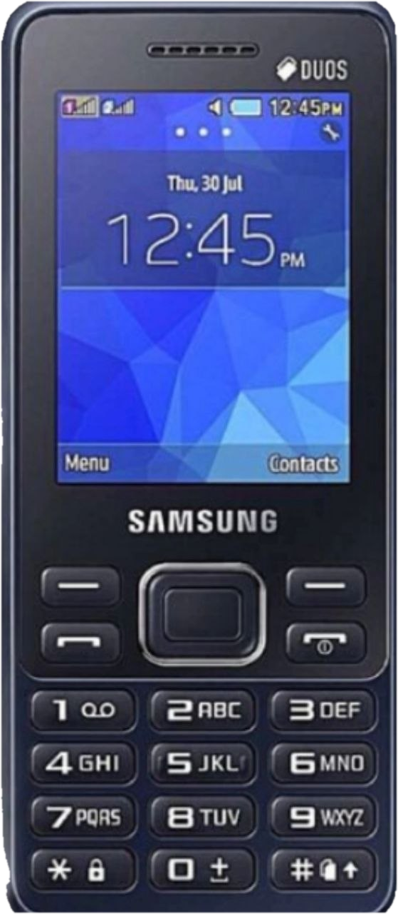
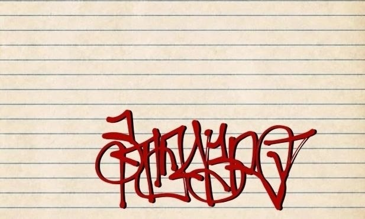
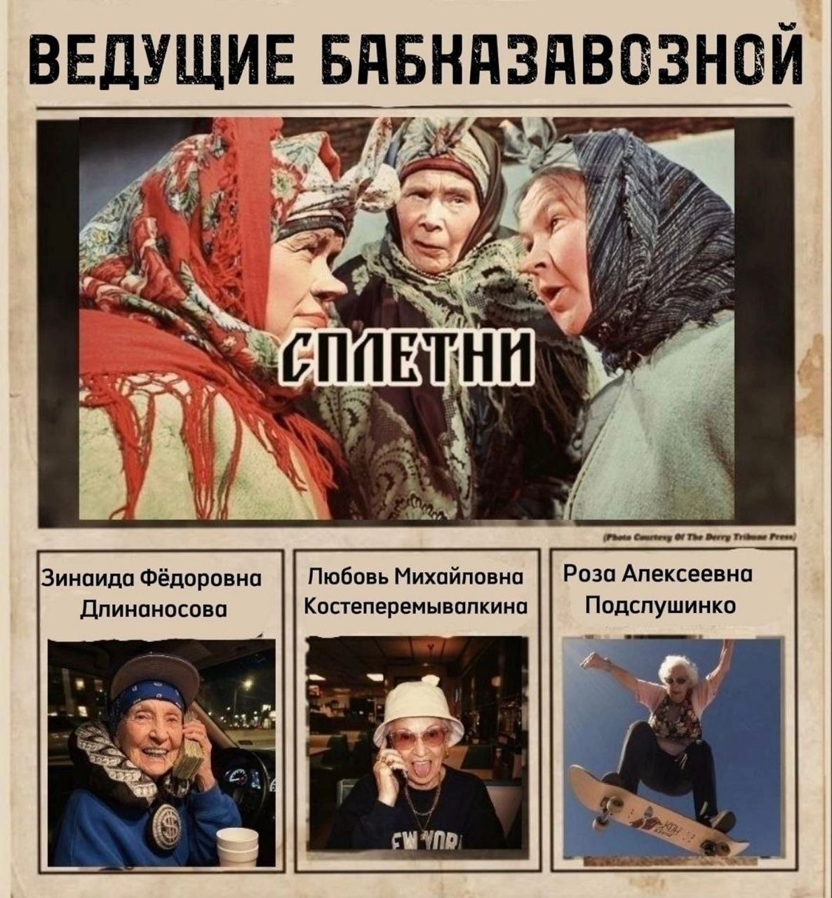
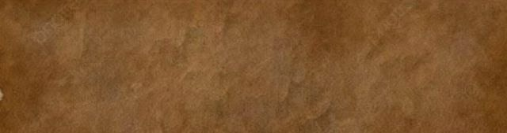

О проекте
Где, как и когда?

Тогда вы по адресу. Смотрите нашу телепередачу — главный независимый источник районных новостей, вещающий прямо с дворовой скамейки. Мы собираем исключительно самые свежие, скандальные и никем не проверенные сплетни от тех, кто сидит на скамейке с шести утра.

Эфиры проходят по вторникам, средам и пятницам в 20:00.



Вы узнали самую грязную и масштабную сплетню в вашей жизни? Звоните на номер 89775553746


Мы в соцсетях
Подписывайтесь, чтобы не пропустить ни одной сплетни 4-го подъезда!